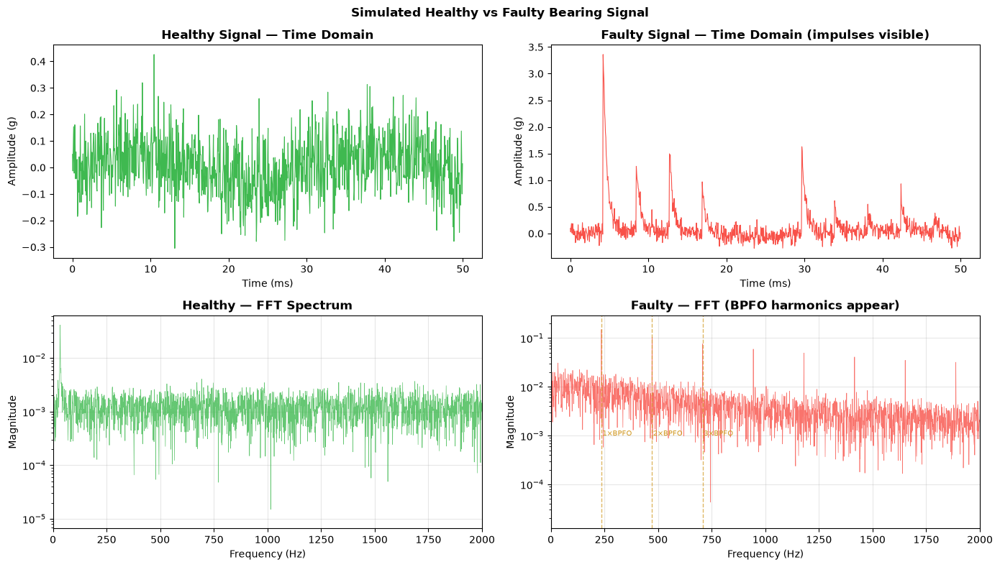
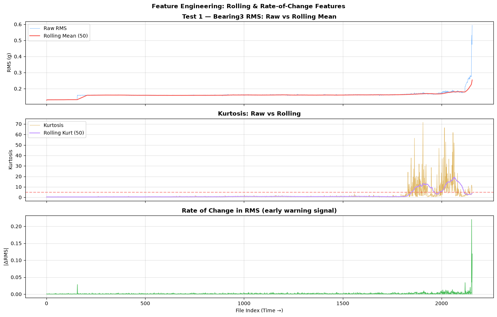

Question: which quantities actually separate a healthy bearing from a failing one, and why should they?
The model is not what makes this work — an Isolation Forest over raw RMS is a few lines. What decides whether it detects anything early is which quantities it is given. This notebook builds two sets, and only the second currently reaches the detector:
From a raw waveform (FeatureExtractor, demonstrated below on a synthetic signal): time-domain shape factors — crest, clearance, impulse — and frequency-domain features from a Welch PSD: spectral entropy, band energy at BPFO / BPFI / BSF harmonics, and the high-frequency ratio.
From the per-file summary table (enrich_processed, run below on the real data): rolling statistics and rate of change over the RMS and kurtosis channels.
The first set needs a raw waveform and the pipeline reads the summary table, so nothing in it reaches the model. Joining the two is the next piece of work; until then this notebook shows what those features do, not what they contribute.
Not all of them move in the direction intuition suggests. Where they do not, the direction is stated next to the feature and pinned by a test.
Code
import matplotlib.pyplot as pltimport numpy as npfrom scipy.fft import fft, fftfreqfrom nasa_bearing_anomaly.config import FIGURES_DIRfrom nasa_bearing_anomaly.features import FeatureExtractor, enrich_processedprint("Imports OK")
# Visualize the simulated signalsfig, axes = plt.subplots(2, 2, figsize=(14, 8))t_plot = t[:1000] # first 50ms# Time domainaxes[0, 0].plot(t_plot *1000, healthy[:1000], color="#3fb950", linewidth=0.8)axes[0, 0].set_title("Healthy Signal — Time Domain", fontweight="bold")axes[0, 0].set_xlabel("Time (ms)")axes[0, 0].set_ylabel("Amplitude (g)")axes[0, 1].plot(t_plot *1000, faulty[:1000], color="#f85149", linewidth=0.8)axes[0, 1].set_title("Faulty Signal — Time Domain (impulses visible)", fontweight="bold")axes[0, 1].set_xlabel("Time (ms)")axes[0, 1].set_ylabel("Amplitude (g)")# Frequency domain (FFT)def plot_fft(ax, x, fs, color, title): N =len(x) freqs = fftfreq(N, 1/ fs)[: N //2] mag = np.abs(fft(x))[: N //2] *2/ N ax.semilogy(freqs, mag +1e-6, color=color, linewidth=0.5, alpha=0.8) ax.set_xlim(0, 2000) ax.set_title(title, fontweight="bold") ax.set_xlabel("Frequency (Hz)") ax.set_ylabel("Magnitude") ax.grid(True, alpha=0.3)plot_fft(axes[1, 0], healthy, fs, "#3fb950", "Healthy — FFT Spectrum")plot_fft(axes[1, 1], faulty, fs, "#f85149", "Faulty — FFT (BPFO harmonics appear)")# Mark BPFO and harmonicsfor h inrange(1, 4): axes[1, 1].axvline(x=bpfo * h, color="#d29922", linestyle="--", alpha=0.7, linewidth=1) axes[1, 1].text(bpfo * h +5, 0.001, f"{h}×BPFO", color="#d29922", fontsize=7)plt.suptitle("Simulated Healthy vs Faulty Bearing Signal", fontsize=12, fontweight="bold")plt.tight_layout()plt.savefig(FIGURES_DIR /"feature_signal_demo.png", dpi=150, bbox_inches="tight")plt.show()

1.2 Frequency-Domain Features
Spectral Entropy measures how evenly energy is spread across frequency: - Healthy: broadband, near-Gaussian noise — energy spread evenly → high entropy - Faulty: energy concentrates at BPFO/BPFI harmonics — sharp peaks → lower entropy
This runs opposite to the intuition that damage means more chaos. The impulses a defect produces are periodic, so they add structure to the spectrum rather than removing it. The direction is verified against the synthetic signals below and asserted in tests/test_features.py.
Because entropy falls for a reason that other things can also cause, read it alongside defect-frequency band energy rather than on its own.
Code
print("Frequency-Domain Features:")print("─"*50)h_freq = extractor.extract_frequency_domain(healthy)f_freq = extractor.extract_frequency_domain(faulty)for feat in h_freq:print(f"{feat:<25}{h_freq[feat]:>10.4f}{f_freq[feat]:>10.4f}")print()print("Note: bpfo_energy should be much higher in the faulty signal!")
Frequency-Domain Features:
──────────────────────────────────────────────────
spectral_entropy 0.9470 0.7647
high_freq_ratio 0.4495 0.1038
bpfo_energy 0.0000 0.0011
bpfi_energy 0.0000 0.0001
bsf_energy 0.0000 0.0001
ftf_energy 0.0001 0.0002
dominant_freq_hz 30.0000 240.0000
psd_mean 0.0000 0.0000
psd_std 0.0000 0.0000
Note: bpfo_energy should be much higher in the faulty signal!
Test 1:
Adding rolling features over windows [10, 50] for 8 RMS channels...
Adding rate-of-change features...
Saved enriched features: data/processed/test1_features.csv (2156 rows, 178 columns)
Test 2:
Adding rolling features over windows [10, 50] for 4 RMS channels...
Adding rate-of-change features...
Saved enriched features: data/processed/test2_features.csv (984 rows, 90 columns)
Test 3:
Adding rolling features over windows [10, 50] for 4 RMS channels...
Adding rate-of-change features...
Saved enriched features: data/processed/test3_features.csv (6324 rows, 90 columns)
Code
# Show the new enriched columnsdf = enriched_dfs[1]new_cols = [c for c in df.columns if"roll"in c or"diff"in c]print(f"Rolling + Rate-of-change features added: {len(new_cols)}")print("Example columns:")for c in new_cols[:15]:print(f" {c}")
Rolling + Rate-of-change features added: 128
Example columns:
Bearing1_ch1_rms_roll_mean_10
Bearing1_ch1_rms_roll_std_10
Bearing1_ch1_rms_roll_max_10
Bearing1_ch1_rms_roll_mean_50
Bearing1_ch1_rms_roll_std_50
Bearing1_ch1_rms_roll_max_50
Bearing1_ch2_rms_roll_mean_10
Bearing1_ch2_rms_roll_std_10
Bearing1_ch2_rms_roll_max_10
Bearing1_ch2_rms_roll_mean_50
Bearing1_ch2_rms_roll_std_50
Bearing1_ch2_rms_roll_max_50
Bearing2_ch1_rms_roll_mean_10
Bearing2_ch1_rms_roll_std_10
Bearing2_ch1_rms_roll_max_10
3. Rolling Features — The Trend Signal
A rolling mean smooths noise and reveals the degradation trend. Rate-of-change detects acceleration in degradation — often the earliest warning.
Code
# Visualize rolling features for Test 1 (Bearing3)df1 = enriched_dfs[1]raw_col ="Bearing3_ch1_rms"roll_col ="Bearing3_ch1_rms_roll_mean_50"diff_col ="Bearing3_ch1_rms_diff_abs"fig, (ax1, ax2, ax3) = plt.subplots(3, 1, figsize=(14, 9), sharex=True)if raw_col in df1.columns: ax1.plot(df1.index, df1[raw_col], color="#58a6ff", linewidth=0.7, label="Raw RMS", alpha=0.8)if roll_col in df1.columns: ax1.plot(df1.index, df1[roll_col], color="#f85149", linewidth=1.5, label="Rolling Mean (50)")ax1.set_title("Test 1 — Bearing3 RMS: Raw vs Rolling Mean", fontweight="bold")ax1.set_ylabel("RMS (g)")ax1.legend()ax1.grid(True, alpha=0.4)kurt_col ="Bearing3_ch1_kurt"roll_kurt ="Bearing3_ch1_kurt_roll_mean_50"if kurt_col in df1.columns: ax2.plot(df1.index, df1[kurt_col], color="#d29922", linewidth=0.7, alpha=0.7, label="Kurtosis")if roll_kurt in df1.columns: ax2.plot(df1.index, df1[roll_kurt], color="#bc8cff", linewidth=1.5, label="Rolling Kurt (50)")ax2.axhline(y=5, color="#f85149", linestyle="--", alpha=0.6)ax2.set_title("Kurtosis: Raw vs Rolling", fontweight="bold")ax2.set_ylabel("Kurtosis")ax2.legend()ax2.grid(True, alpha=0.4)if diff_col in df1.columns: ax3.plot(df1.index, df1[diff_col], color="#3fb950", linewidth=0.7) ax3.fill_between(df1.index, df1[diff_col], alpha=0.3, color="#3fb950")ax3.set_title("Rate of Change in RMS (early warning signal)", fontweight="bold")ax3.set_xlabel("File Index (Time →)")ax3.set_ylabel("|ΔRMS|")ax3.grid(True, alpha=0.4)plt.suptitle("Feature Engineering: Rolling & Rate-of-Change Features", fontsize=12, fontweight="bold")plt.tight_layout()plt.savefig(FIGURES_DIR /"feature_rolling_test1.png", dpi=150, bbox_inches="tight")plt.show()

4. Feature Importance Preview
Compare feature distributions in early (healthy) vs late (degraded) period.
On a synthetic waveform, FeatureExtractor produced 11 time-domain and 9 frequency-domain features, and the healthy/faulty comparison above shows which way each one moves.
On the real data, what was written to data/processed/test{N}_features.csv is rolling mean, standard deviation and maximum over windows of 10 and 50 files, plus first differences — on the RMS and kurtosis channels only. That table is what notebook 03 scores.
So the frequency-domain features are demonstrated here and absent from the pipeline. The distributions above separate healthy from degraded on the features that are in it; whether the defect-frequency features would add to that is an ablation nobody has run.